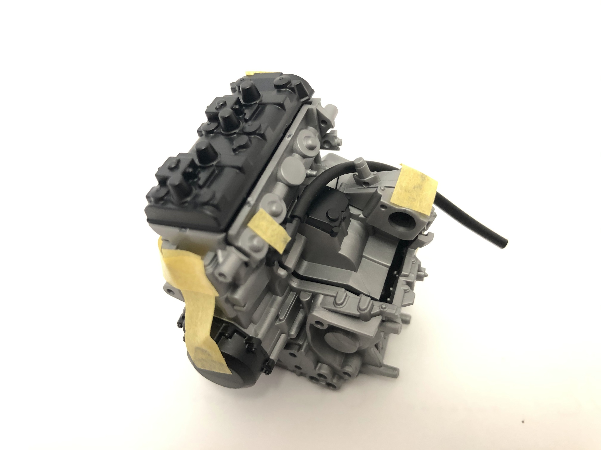

ついに中身を開封！
仮組み⇒パーツ塗装⇒組立ての順番で行っていきたいと思います。
まずはバイクの心臓、エンジンから
おお～
(久々なので手が震えています)
もう少しパーツを切り取って組み合わせると、、、

し、渋い！
エンジンぽい。
(ちなみに黄色い部分はマスキングテープで、一時的な仮止めをしています。)
しかしなかなか細かい作業大変だ(疲)
【コラム】
～エンジンについて～
なおこのNinja H2R
水冷並列4気筒
のエンジンが搭載されている。
簡単に言えば空気を送り出すピストンが４つ付いている。
4気筒以外にも単気筒、2気筒、3気筒、6気筒とかあってそれぞれ長所短所がある。
さらに4気筒の中でも並列とV型があって、、、
(詳しくはこことかこっちとかここらへん読んでみてください。)